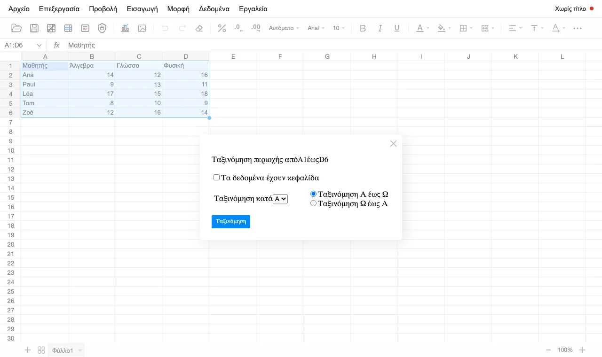
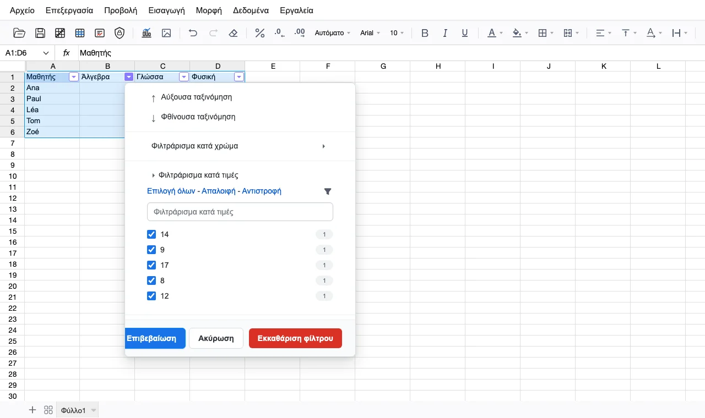
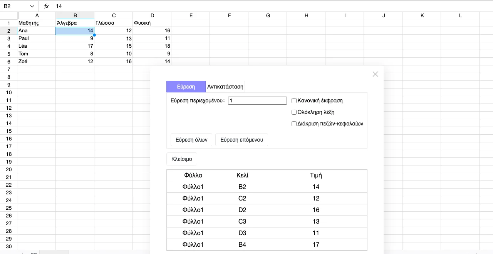

Ταξινόμηση, φίλτρο, εύρεση
Ταξινόμηση
| Εντολή | Αποτέλεσμα |
|---|---|
| Δεδομένα › Ταξινόμηση και φίλτρο › Ταξινόμηση Α έως Ω, Ταξινόμηση Ω έως Α | ταξινομεί την επιλογή ως προς την πρώτη στήλη· και με ή δεξί κλικ |
| δεξί κλικ › Ταξινόμηση επιλογής | επιλογή στήλης, σειράς, και αν η πρώτη γραμμή είναι κεφαλίδα |

Επιλέξτε όλο τον πίνακα, όχι μία στήλη: οι γραμμές πρέπει να μένουν ακέραιες. Περιοχή με συγχωνευμένα κελιά δεν ταξινομείται.
Φίλτρο
- Επιλέξτε τον πίνακα, με την κεφαλίδα.
- Δεδομένα › Ταξινόμηση και φίλτρο › Δημιουργία φίλτρου, ή , ή δεξί κλικ › Φιλτράρισμα επιλογής.
- Κλικ στο βέλος μιας στήλης.

| Στο μενού μιας στήλης | Αποτέλεσμα |
|---|---|
| Αύξουσα ταξινόμηση, Φθίνουσα ταξινόμηση | ταξινομεί τις γραμμές του πίνακα |
| Φιλτράρισμα κατά χρώμα | ως προς το χρώμα φόντου ή κειμένου |
| Φιλτράρισμα κατά τιμές | σημειώστε τις τιμές που μένουν· Επιλογή όλων, Απαλοιφή, Αντιστροφή· το πεδίο αναζητά τιμή |
| Επιβεβαίωση | εφαρμόζει |
| Εκκαθάριση φίλτρου | αφαιρεί το φίλτρο του πίνακα |
Οι γραμμές που αποκλείονται κρύβονται, δεν διαγράφονται. Τα φίλτρα πολλών στηλών συνδυάζονται. Το Δεδομένα › Ταξινόμηση και φίλτρο › Εκκαθάριση φίλτρου αφαιρεί το φίλτρο.
Εύρεση, αντικατάσταση
Το Ctrl F ανοίγει Εύρεση, το Ctrl H Αντικατάσταση.

| Επιλογή | Αποτέλεσμα |
|---|---|
| Κανονική έκφραση | το κείμενο είναι κανονική έκφραση: το ^A βρίσκει ό,τι αρχίζει από A |
| Ολόκληρη λέξη | ολόκληρο το κελί ισούται με το κείμενο |
| Διάκριση πεζών-κεφαλαίων | διακρίνει πεζά και κεφαλαία |
| Εύρεση όλων | απαριθμεί τα κελιά που βρέθηκαν· κλικ σε γραμμή οδηγεί εκεί |
| Εύρεση επόμενου | πηγαίνει στο επόμενο |
| Αντικατάσταση, Αντικατάσταση όλων | ένα κελί, όλα |
Η εύρεση γίνεται στο φύλλο που εμφανίζεται.